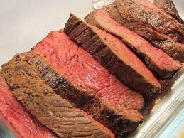

Roast Beef

Description
Roast beef might sound fancy and complicated to make, but it's actually quite simple! With a good piece of meat and some simple herbs, you can have roast beef that's way more tender and flavorful than the store-bought kind. Below, we break down what's most important to know when preparing this classic dish.
Ingredients
- 1 (4-lb.) round roast
- 1/4 c. extra-virgin olive oil
- 3 cloves garlic, minced
- 1 tbsp. chopped fresh rosemary
- 1 tbsp. chopped fresh thyme leaves
- 2 tsp. kosher salt
- 1 tsp. freshly ground black pepper
Steps
- We usually use a top round roast, but a bottom round roast should work too. If you're unsure, ask your butcher! Since the meat is slow roasted for a long amount of time, even tougher, more lean cuts of meat will be tender. Just be aware that if you choose a particularly lean cut of meat, it should be sliced relatively thin to avoid being too chewy.
- This is where you can really get creative. We kept things simple in this recipe: just thyme, rosemary, salt, and pepper. Feel free to swap in any of your favorite herbs (sage, parsley, oregano etc.) or use dried if you prefer. Spices like cumin or coriander seeds would be delicious as well, do what feels right to you! Just don't be shy on the flavorings, this is a big cut of meat and the more flavor, the better. We suggest 1 teaspoon salt per pound. Alliums like onions, garlic, and scallions would be delicious additions as well. I prefer to mix all my flavorings with olive oil to make a paste—it allows for more even distribution and insures your beef gets seasoned all the way around. (Don't forget the bottom!)
- You might be wondering why you have to change the temperature of the oven 15 minutes into cooking. I swear, there's a good reason! Ideally, all roasted meats would be seared on all sides in a hot skillet to develop a golden, delicious crust. With something like a top round roast, searing can be next to impossible. (AKA it's WAY too big and heavy to move around in a skillet.) Starting with a hot oven gives the roast a chance to get that beautiful crust without bringing out a pan. After you've got a head start on that crust, you can lower the temperature and the meat will start cooking from the inside out.
- As far as post-cooking temperatures, we prefer a medium to medium-rare roast, with a little pink in the center. In our opinion, the meat stays more tender and flavorful this way. If you prefer not to see any pink, you can roast longer! One thing that's not optional, though, is a meat thermometer. It takes the guess work out of cooking big pieces of meat, and we swear it'll come in handy more than just this once. Pro tip: make sure you're inserting your thermometer far enough to hit the center of the roast for an accurate reading. For a medium-rare pot roast, aim for an internal temperature of about 130°F. The temperature of the meat will continue to rise a bit as it rests as well.
- I know it's tempting to dig right in when your roast comes out of the oven. Resist! Transfer your meat to a cutting board and let it rest for 30 minutes to allow all the juices to redistribute throughout the muscle. If you cut it right away, all those flavorful juices will end up on the cutting board and your meat will be dry and sad. When it's time, make sure to use your sharpest carving knife or chef's knife to get nice thin slices.